Visi Kami
Menjadi organisasi yang menjembatani pemuda dalam mengatasi isu-isu pendidikan, sosial dan lingkungan, serta mendorong adanya kolaborasi multi-pihak.
Pelajari Lebih LanjutMewadahi pemuda untuk turut andil mengatasi permasalahan pendidikan, perdamaian, lingkungan, dan isu sosial lainnya melalui aksi kolektif.

Menjadi organisasi yang menjembatani pemuda dalam mengatasi isu-isu pendidikan, sosial dan lingkungan, serta mendorong adanya kolaborasi multi-pihak.
Pelajari Lebih LanjutJelajahi berbagai inisiatif kami yang dirancang untuk memberdayakan pemuda dan menciptakan dampak positif secara langsung.
Dedikasi untuk meningkatkan kualitas pendidikan anak-anak di berbagai daerah melalui kegiatan belajar mengajar yang inovatif.
Kamp kerelawanan bagi pemuda untuk berkolaborasi dalam proyek sosial dan lingkungan yang berdampak.
Menggerakkan aksi dan kampanye yang dipimpin oleh pemuda Riau untuk mendukung pencapaian SDGs.
Program inkubasi dan akselerasi untuk meningkatkan skala dan dampak dari proyek-proyek sosial yang ada.
Ikuti perkembangan, kisah inspiratif, dan pencapaian terbaru dari komunitas kami.
Pengalaman mereka adalah bukti nyata dari dampak yang kami ciptakan bersama.

Volunteer YVC 2025
""Ekspetasi join volunteer itu ternyata dijawab sama IYES Indonesia. Benar-benar sebagai ruang untuk bertumbuh. Awalnya join YVC 2025 itu ga pernah bayangin bahwa relasi aku sendiri ga berhenti hanya sampai di camping kemarin. Balik kegiatan ini, benar-benar merasa memiliki keluarga meski jauh dari keluarga."
Volunteer IYM 10 dan YVC 2025
Hallo Sobat IYES, kenalin nama aku Azra Haura Dayani, aku adalah seorang mahasiswa yg dulunya berpikir jika memasuki Dunia NGO tidak akan berdampak banyak baik padaku. Tapi, saat pertama kali aku mengenal IYES, aku pribadi merasakan hal berbeda. Kayak, saat pertama kali aku mengikuti program YVC 2025, aku ngerasain dalam pergaulannya yang dimana tujuan kami sama dan pemikiran yang sama. Saat selesai mengikuti Program IYM 10 aku makin ngerasain sikap kepedulian satu sama lainnya tanpa memandang latar belakang. Disini aku juga mendapatkan kesempatan emas yang dimana aku diterima menjadi salah satu anggota Volunteer IYM 10 dan masuk divisi Pubdok. Didalam divisi ini juga aku belajar bagaimana menangkap moment dalam sekejap dan lain¬≤. Didivisi ini ( Pubdok ) aku diterima baik dan diajari mulai dari awal tanpa adanya tindak kekerasan senoritas ataupun sebagainya. Mereka memberi tauku dengan sopan dan baik. Untuk itu, terima kasih IYES atas kesempatannyaüòÅ

Volunteer IYM 10
My time as a volunteer was nothing short of transformative, perfectly blending purpose with heart. The highlight was undoubtedly stepping into the community to practically apply our academic learning, which gave our knowledge a deeper meaning. But beyond the service, the true magic lay in the powerful bonds we forged; the shared commitment fostered an incredible sense of ownership and care among every volunteer and IYES member, making us feel like true siblings from another mothersü´∂ü§ç It was such a fun and fulfilling ride‚Äîshould we do it again?üëÄ

 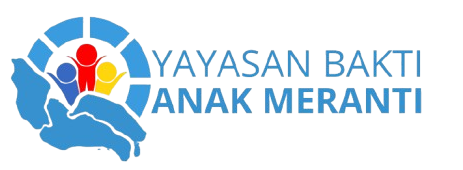
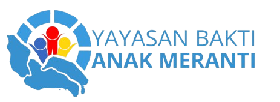
 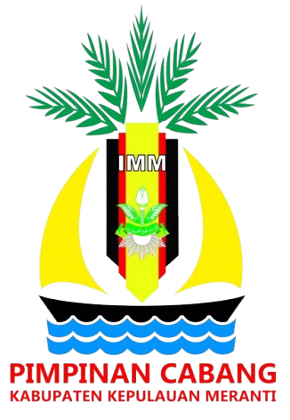
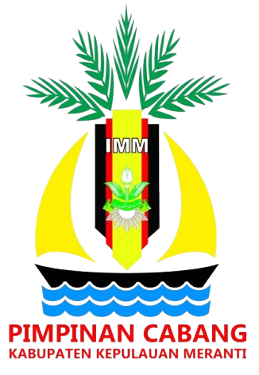

 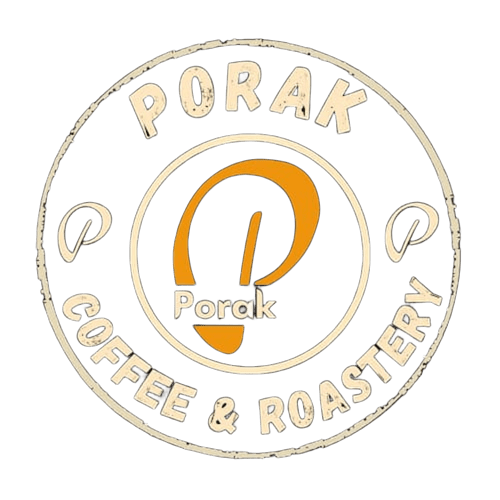
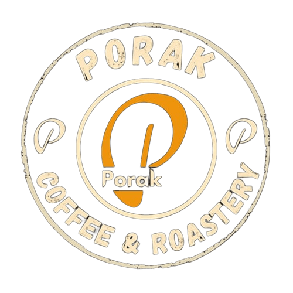


 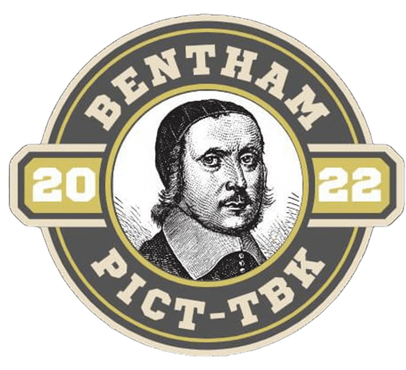
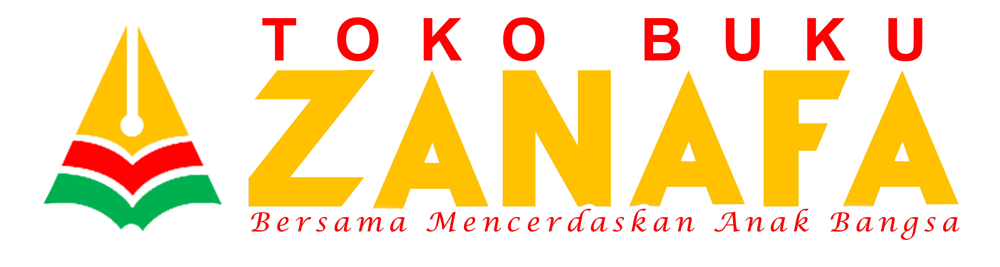
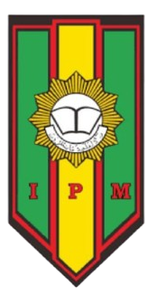
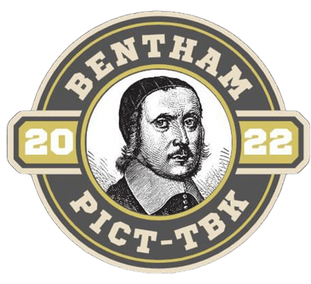
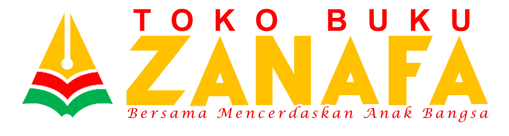
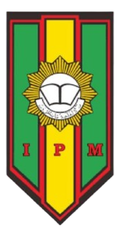


Temukan jawaban cepat untuk pertanyaan yang sering diajukan.